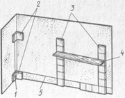
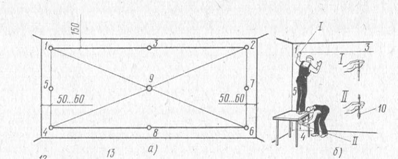
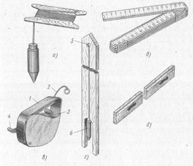

-

8(0152)31-25-61
-

kst@ggkst.by
-

http://ggkst.by
8(0152)31-25-61
kst@ggkst.by
http://ggkst.by
Провешивание вертикальных поверхностей
Определение и временное закрепление точек лицевой плоскости будущей облицовки называют провешиванием.
Провешивание стен выполняют в определенной последовательности. На расстоянии 140—150 мм от потолка, а от углов примыкающих стен на расстоянии 50—60 мм, забивают гвозди (рис. 1, а). Их шляпки должны выступать из поверхности стены на 10—15 мм, т. е. на толщину будущей облицовки. По уровню шляпок забитых гвоздей натягивают шнур. Гвоздь вбивают по середине натянутого шнура так, чтобы шляпка гвоздя только касалась шнура.
Рабочий от шляпки гвоздя (рис. 1, б) опускает отвес, а другой рабочий внизу стены забивает гвоздь так, чтобы его шляпка касалась шнура отвеса. Гвоздь располагают на высоте нижнего ряда будущей облицовки. Следующий гвоздь располагают на середине высоты стены; его шляпка также должна касаться шнура отвеса.
Такую же операцию повторяют в другом углу стены, забивая последовательно гвозди. Контролируя точность провешивания, натягивают шнур по диагоналям стены и забивают гвоздь. После провешивания стены шляпки гвоздей будут находиться в одной плоскости.
Гвозди, выступающие из плоскости стены на толщину облицовки, являются марками — знаками, фиксирующими отдельные точки лицевой поверхности облицовки.

Рис. 1. Провешивание стен: а — провешивание поверхности, б — установка марки 4 по отвесу, в — дисковый маяк; 1—9 — гвозди, 10 — отвес, 11 — гипсовый раствор, 12 — диск, 13 — маячная струна, 14 — втулка со стержнем, 15 — стопорный винт
Вместо гвоздей при провешивании стен применяют инвентарные дисковые маяки (рис. 1, в). Их закрепляют гипсовым раствором к любой поверхности. При втапливании диска в раствор он выдавливается через отверстия и, затвердев, закрепляет установленный маяк. Провешивание плоскости стены для установки маяков и определение необходимой толщины облицовки выполняют приемами, описанными выше. Маячную струну (капроновую жилку толщиной 1 —1,5 мм) дискового маяка в зависимости от толщины облицовки навешивают на одну из канавок втулки диска и закрепляют стопорным винтов.

Рис. 2. Установка опорных маяков и маячных рядов: 1 — отвес, 2 — плитки (опорные маяки), 3 — маячные ряды, 4 — правило, 5 — причальный шнур

Рис. 3. Контрольно-измерительные инструменты и приспособления для провешивания стен: а — отвес, б — складной метр, в — разметочный шнур в корпусе, г — правило с отвесом, д — правило; 1 — корпус, 2 — шнур, 3 — барабан, 4 — ручка, 5 — скоба, 6 — отвес
При провешивании поверхностей стен в небольших помещениях устанавливают четыре марки, располагаемые по одной в каждом углу.
Завершив провешивание стен и установку марок, приступают к разметке. Складным метром или рулеткой размечают ряды будущей облицовки, определяют количество плиток, укладываемых в ряду. Характерные точки облицовываемой поверхности, например углы, закрепляют опорными маяками (рис. 2), т. е. облицовочными плитками, установленными на гипсовом растворе. На протяженных участках облицовки выкладывают маячные ряды.
Вертикальность установленных опорных маяков и маячных рядов проверяют правилом с отвесом.
Если стену выше облицовки будут оштукатуривать, то для правильной установки карнизного (верхнего) ряда плиток требуется, чтобы облицованная панель на 5—10 мм выступала над плоскостью штукатурки.
При провешивании поверхностей и установке маяков используют контрольно-измерительные инструменты и приспособления (рис. 3), позволяющие точно установить необходимое количество марок и маяков.
Установка опорных марок и маяков